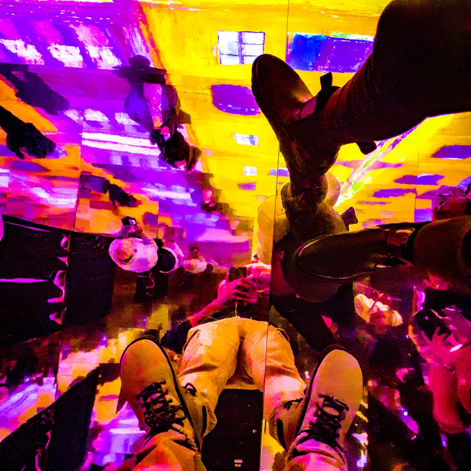
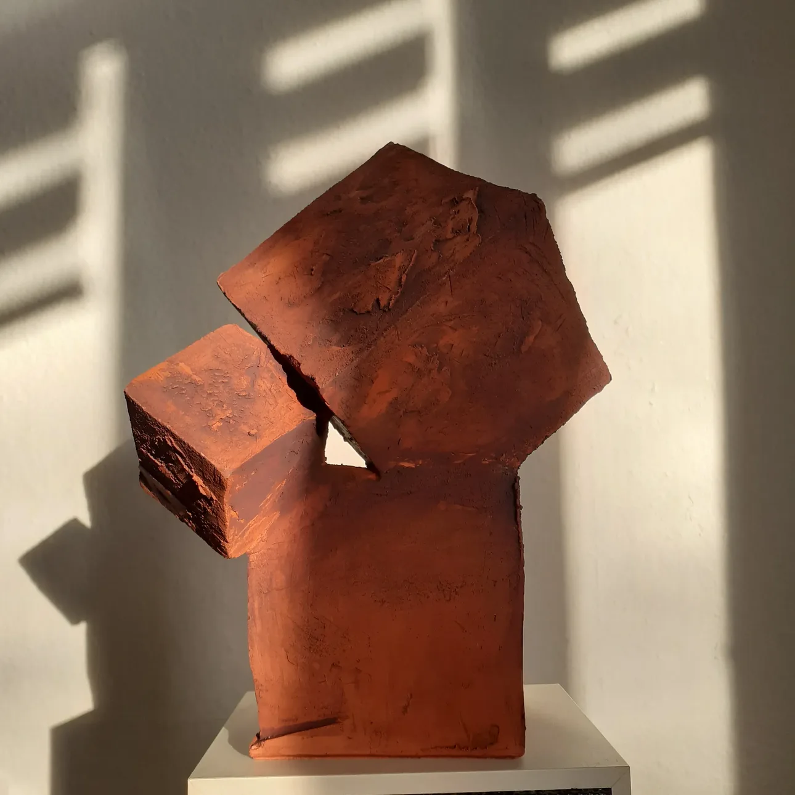
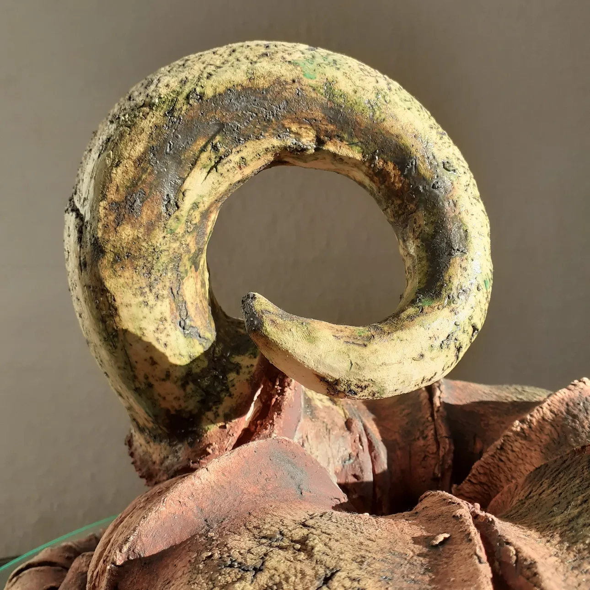
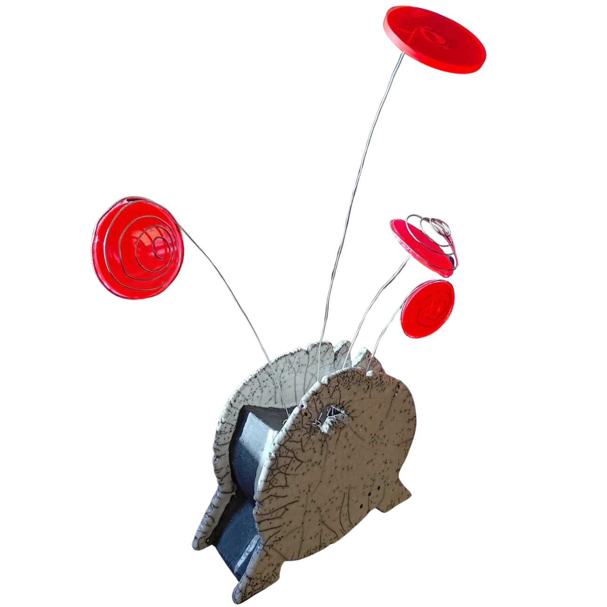

bzs42::artwork
::zenobotanis.Revelation II





Astrobloom — Signale aus dem Regolith
Material: Keramik (Krakelee-Glasur), Metalldraht, Acrylglas
Dieses Werk ist eine visuelle Symphonie des Bio-Futurismus. Es fängt den Moment ein, in dem die Grenzen zwischen organischer Schöpfung und technologischer Evolution verschwimmen.
Aus einer rauen, tief rissigen Keramikbasis – einer Metapher für den unbarmherzigen, ausgetrockneten Boden eines fremden Planeten – bricht unaufhaltsam neues Leben hervor. Filigrane, schwebende Metalldrähte winden sich der Schwerelosigkeit entgegen. Sie wirken wie feine Antennen, die im ewigen Vakuum des Kosmos nach Signalen suchen. An ihren Enden erblühen transluzente, intensiv rote Scheiben. Sie imitieren die Ästhetik außerirdischer Laboratorien, in denen Pflanzen unter künstlichem Licht gedeihen. Die feinen Metallspiralen auf diesen synthetischen Blüten symbolisieren das ewige Streben der Natur nach Geometrie und Ordnung – selbst in den lebensfeindlichsten Tiefen des Universums.